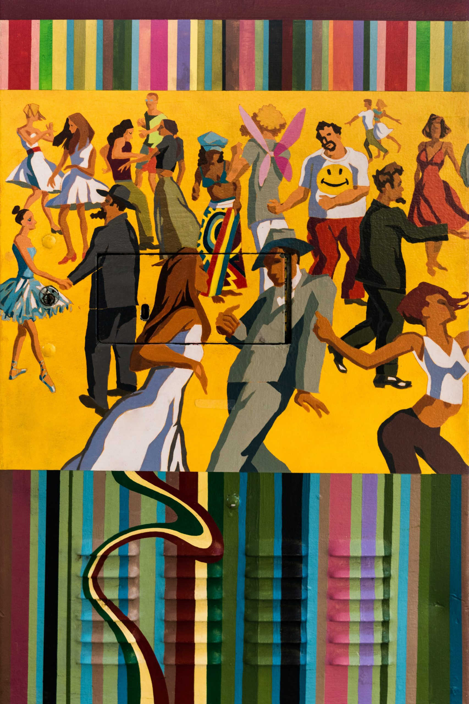

Grupos étnicos e raciais cujos membros podem vir a sofrer qualquer tipo de discriminação são chamados de minorias. O termo “minoria” está mais associado a fatores sociais do que ao número de pessoas que constitui um segmento da sociedade. Por exemplo, pessoas que têm olhos verdes representam uma minoria da população no sentido quantitativo. Contudo, sociologicamente, não são consideradas uma minoria.
Há muitos grupos sociais minoritários. Estes podem ser étnicos, religiosos, sexuais, políticos, etc. Muitas minorias sofrem exclusão social, desigualdade, preconceito e discriminação. Tais desigualdades sociais podem causar hostilidades entre setores de uma sociedade.
É possível que a maior parte de uma população seja constituída por uma minoria – um fenômeno denominado minorias majoritárias. Uma minoria majoritária é geralmente subordinada a uma minoria poderosa. Isso ocorreu na África do Sul durante o regime racista do apartheid: a maioria negra era subjugada pela minoria branca. Os negros eram segregados: não podiam frequentar os mesmos locais públicos, frequentar as mesmas escolas ou morar nos mesmos bairros que a população branca. Além disso, os negros eram proibidos de votar.
De acordo com a perspectiva sociológica, as minorias geralmente possuem um senso de identidade grupal (o conceito de pertencerem a um grupo)e de separação (o sentimento de isolação). Geralmente vivem em certas regiões de um país, em certas cidades e bairros. Por exemplo, muitos japoneses que imigraram para o Brasil se estabeleceram na cidade de São Paulo e no bairro da Liberdade.
Para preservar sua identidade cultural, a maioria das minorias valoriza a endogamia, ou seja, o casamento entre seus membros. Em muitos casos, o casamento com membros de outras minorias ou da maioria são condenados. A endogamia reduz a possibilidade de assimilação – a adoção de outra cultura por uma minoria.
Em uma democracia, é importante que as minorias participem e ajudem a influenciar a esfera pública do país onde vivem. É fundamental que se organizem para garantir seus direitos e para lutar por seus interesses. Essa é a forma mais segura de garantir o prevalecimento da igualdade e da justiça.
Raça e Etnia
 Raça e EtniaRaça e etnia são conceitos importantes no estudo da Sociologia. São muito estudados, pois exercem um papel importante nas relações humanas.
O termo raça se refere a uma categoria de pessoas que compartilham certas características físicas: cor de pele e de cabelo, traços faciais, estatura, etc. Uma raça é constituída por pessoas que possuem características biológicas consideradas socialmente significantes. Isto é, a sociedade as trata de forma diferente por causa de tais características. Exemplificando: a cor dos olhos não é socialmente significante, mas a cor da pele é.
Os acadêmicos tentam classificar os seres humanos em diferentes raças. Algumas delas são: africana, asiática, australiana, europeia (branca), indígena, índia e polinésia.
Uma pergunta chave no estudo de raças é se estas são uma categoria biológica ou uma categoria social. As pessoas certamente enxergam as diferenças físicas entre as pessoas, mas cientistas e sociólogos questionam o valor do conceito biológico de raça. Há mais diferenças entre os membros de uma raça do que entre membros de raças diferentes. Assim, as categorias raciais são imprecisas. Isso levou muitos sociólogos a afirmar que não existem raças, e sim, variações físicas e genéticas entre indivíduos e grupos de pessoas.
Já que a definição de raça não é clara, muitos cientistas sociais preferem utilizar o termo etnia para se referir a pessoas com heranças culturas distintas.
Um grupo étnico é uma categoria social de pessoas que têm a mesma ancestralidade e cultura: língua, religião, normas, práticas, valores, história, etc. Os grupos étnicos possuem um senso de identidade – o sentimento de pertencer a algum subgrupo – e se diferenciam de outros subgrupos graças às suas crenças, valores e comportamentos distintos.
Etnia significa experiências histórias, sociais e culturais compartilhadas, que derivam da mesma origem – nacional ou regional. Isto é, etnia é uma herança cultural compartilhada.
Diferenças étnicas não são herdadas, e sim, aprendidas. Portanto, os termos etnia e grupo étnico evitam as conotações biológicas dos termos raça e grupo racial e as diferenças biológicas implícitas nesses termos. Ao mesmo tempo, a importância que damos à etnia demonstra que ela é uma construção social e que influencia a forma como as pessoas são tratadas.
O senso de identidade que muitas pessoas adquirem ao fazer parte de um grupo étnico é importante por vários motivos, tanto bons como ruins. Identidades étnicas dão ao indivíduo um senso de pertencer a algo e o reconhecimento da importância de sua origem cultural. O termo orgulho étnico reflete o senso de autoestima que muitas pessoas têm de sua etnia. De fato, a etnia exerce um papel importante na socialização de milhões de pessoas ao redor do mundo. Contudo, o lado negativo de pertencer a uma etnia é que pode gerar conflitos com membros de outras etnias. A história comprova que é relativamente fácil o surgimento do preconceito contra membros de uma etnia.
A população de muitos países é constituída por diversos grupos étnicos. O ideal é que os países almejem o pluralismo: que pessoas de diferentes etnias e raças possam manter suas tradições e cultura e, ao mesmo tempo, garantir sua igualdade social.
A herança étnica das pessoas as influenciam e é fonte de orgulho. Contudo, como nos ensina a história, a diferença entre etnias pode ser motivo de conflito, preconceito e até ódio entre pessoas. No mundo de hoje, ainda ocorrem conflitos étnicos. No final do século 20 e mesmo no século 21, o mundo presenciou guerras entre grupos étnicos na Europa Oriental, na África em outras regiões do mundo. Durante vários desses conflitos, ocorreu até “limpeza étnica” – o massacre de milhares de pessoas que pertenciam a certos grupos étnicos.
Alguns exemplos de grupos étnicos que vivem no Brasil são os indígenas, os italianos, os japoneses, os árabes e os judeus.
Preconceito e Discriminação
Preconceito e discriminação são fenômenos que sempre existiram. Ser preconceituoso significa tem opiniões ou crenças preconcebidas sobre certos grupos de pessoas. O preconceito pode ser positivo ou negativo, mas tanto um como o outro são difíceis de mudar. A forma negativa do preconceito significa ter atitudes, crenças e opiniões inflexíveis, irracionais e negativas sobre grupos de pessoas.
O preconceito leva à discriminação. Todavia, é possível que uma pessoa preconceituosa não aja de acordo com seus preconceitos. Discriminação significa se comportar de certa maneira em relação a todo um grupo: é a negação arbitrária dos direitos, privilégios e oportunidades para membros de outros grupos. O termo arbitrário significa que um grupo da sociedade é tratado de forma desigual, simples e exclusivamente graças à sua raça ou etnia.
Um exemplo de discriminação individual é uma pessoa não ser atendida ou ser mal atendida em lojas ou restaurantes por causa de sua raça ou etnia. Também ocorre discriminação individual quando indivíduos são prejudicados ou perseguidos pelo fato de pertencer a alguma raça ou etnia. Alguns grupos étnicos, por exemplo, se sentem perseguidos pela polícia.
A sociedade precisa combater tanto a discriminação individual quanto a discriminação institucional. Esta ocorre quando há discriminação em toda uma instituição: tribunais, mercados de trabalho, sistemas educacionais, etc. Esse tipo de discriminação não afeta apenas alguns indivíduos, mas todas as pessoas que façam parte de uma etnia ou raça. Em alguns casos, a discriminação institucional ocorre contra mulheres, deficientes, etc.
A partir de 1989, a legislação brasileira considera crime a discriminação ou preconceito de raça, cor, etnia, religião ou procedência nacional. A lei pune atos discriminatórios com penas de até cinco anos de reclusão
Racismo e Genocídio
Um conceito similar ao da discriminação é o racismo. Ser racista significa acreditar que certos grupos étnicos são superiores ou inferiores. Muitos racistas até apoiam o conceito de segregação – a ideia de que deve haver uma separação, social e até física, entre certos grupos da sociedade.
A base do preconceito e do racismo são os estereótipos raciais e étnicos: as generalizações feitas a respeito de certos grupos de pessoas. É inegável que há diferenças culturais entre os diferentes grupos de uma sociedade, mas a quase totalidade dos estereótipos é falsa e serve apenas para fomentar o racismo, o ódio e a divisão entre as pessoas.
Infelizmente, o racismo e o preconceito são fenômenos que nunca deixaram de existir. Por exemplo, até o ano de 1964, havia nos Estados Unidos várias formas de discriminação, como a segregação entre brancos e negros. Após a Guerra de Secessão, a população branca da região sul dos Estados Unidos criou leis para limitar os direitos dos negros e para segregá-los: negros e brancos não frequentavam as mesmas escolas, não sentavam juntos nos ônibus e não serviam juntos nas forças armadas. Após a Segunda Guerra Mundial, diversos grupos sociais, especialmente os negros, lutaram em prol da igualdade perante a lei. Em 1964, o Congresso dos Estados Unidos aprovou a Lei dos Direitos Civis, que pôs fim aos diversos sistemas estaduais de segregação racial.
Nos séculos XX e XXI, o preconceito levou ao genocídio – a exterminação física de uma etnia.
Uma nação que sofreu discriminação ao longo dos milênios foi o Povo Judeu. Durante a Segunda Guerra Mundial, seis milhões de judeus foram exterminados pela Alemanha nazista. Os judeus foram vítimas de genocídio devido à ideologia racista do Partido Nazista e de seu líder, Adolf Hitler.
Na Bósnia-Herzegovina, a população era dividida em muçulmanos (44%), sérvios (32%) e croatas (16%). Embora culturalmente diferentes, essas comunidades conviviam em paz. Em 1992, os sérvios iniciaram uma "limpeza étnica": por meio do terror – assassinatos e estupros –, expulsaram os habitantes não sérvios da região. Dois anos mais tarde, os albaneses, que constituíam a maioria da população de Kosovo - passaram a ser vítimas da "limpeza étnica" sérvia – sofrendo um verdadeiro genocídio.
Na história, houve também muitos casos de etnocídio – a eliminação da cultura (e não da existência física) de um povo. O etnocídio ocorre quando um povo não respeita a cultura de outro e tenta mudá-la.
Texto de: Educa Bras ·